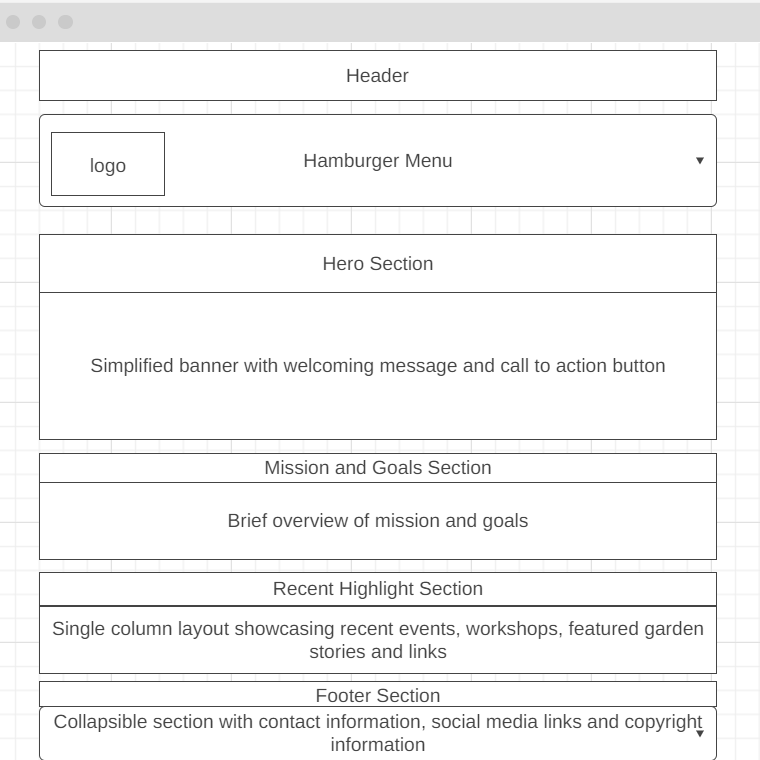
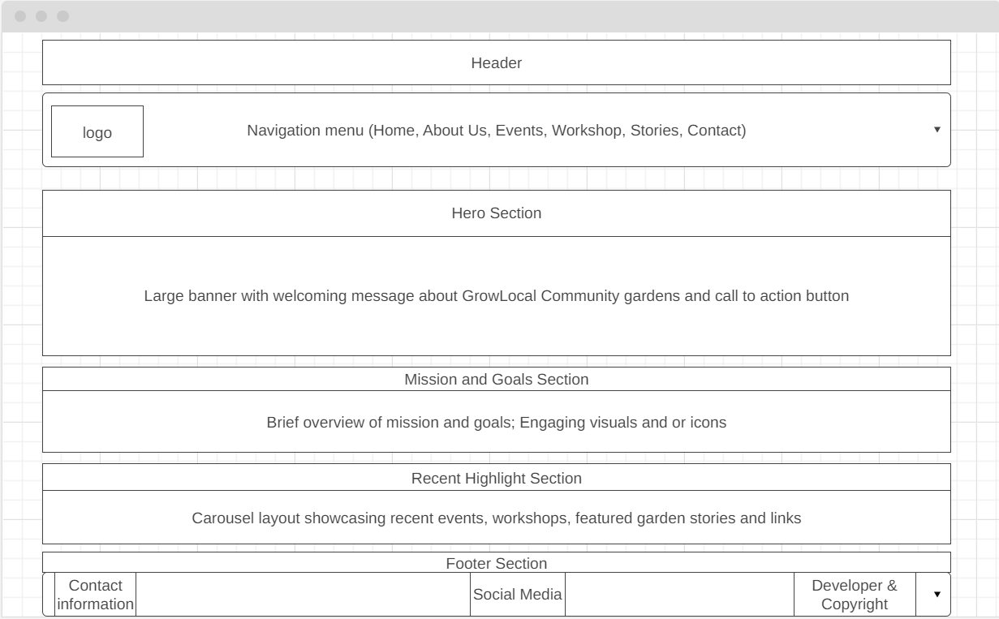

GrowLocal Community Gardens
This name reflects our focus on promoting sustainable gardening and community engagement.
Optional domain availability: growlocalgardens.org
This name reflects our focus on promoting sustainable gardening and community engagement.
Optional domain availability: growlocalgardens.org
The GrowLocal Community Gardens website serves as a hub for promoting sustainable gardening practices and fostering community engagement. It provides information on garden locations, membership opportunities, events, educational resources, and a community blog.
Main Heading Color: #336633
Body Text Color: #444444
Background Color: #f5f5f5
Accent Color: #ffcc00
Main Heading Font: 'Roboto', sans-serif;
Body Text Font: 'Open Sans', sans-serif;
Mobile View Wireframe:
Desktop View Wireframe:
